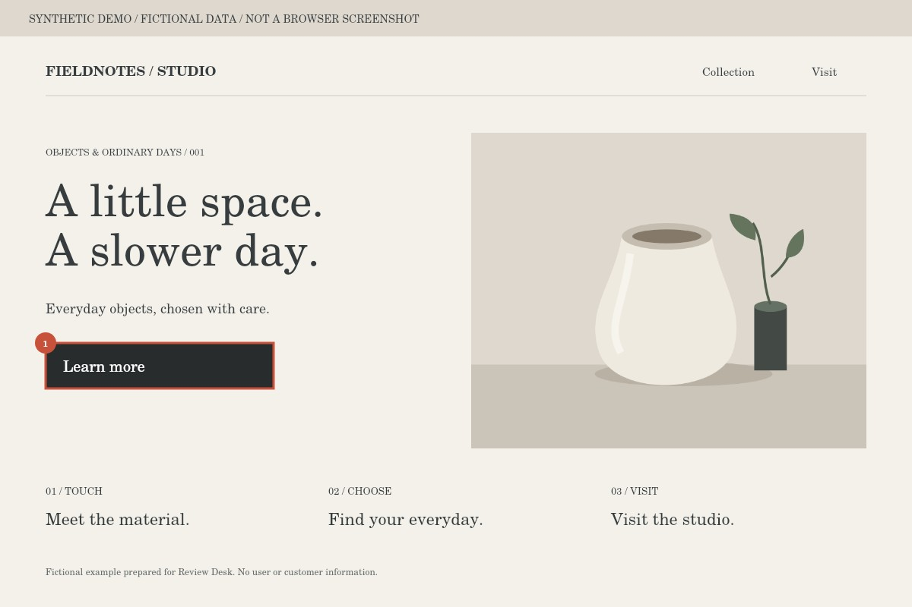

ボタンの行き先がわかる文言に変更する。 / Make the button destination clear.
Studio introduction / Content owner / https://example.test/studioボタンの行き先がわかる文言に変更する。 / Make the button destination clear.
Original text
Learn more
Replacement text
Check availability

No image
Resolution and verification
—
ID: sample-issue-1